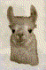

class AbstMapping: All methods

Annotated List
Files
Globals
Hierarchy
Index
advance - itinerary
Llama::AbstMapping::advance
Llama::AbstMapping::deriv
Llama::AbstMapping::fixed_point
Llama::AbstMapping::itinerary
itmap - nvar
Llama::AbstMapping::itmap
Llama::AbstMapping::neqs
Llama::AbstMapping::npar
Llama::AbstMapping::nvar
operator () - ~AbstMapping
Llama::AbstMapping::operator ()
Llama::AbstDiffeomorphism::~AbstDiffeomorphism
Llama::AbstMapping::~AbstMapping
Generated by: king on larix.tiem.utk.edu on Tue Jun 29 10:55:51 2004, using kdoc 2.0a54.